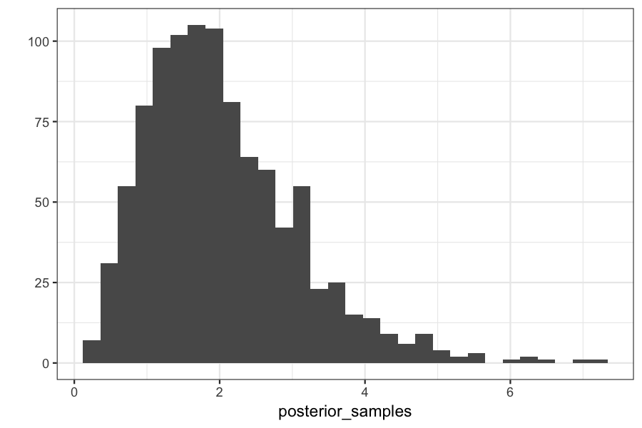
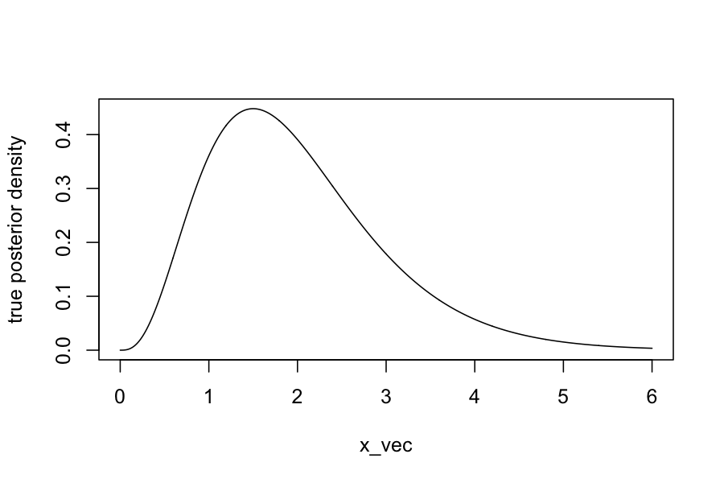
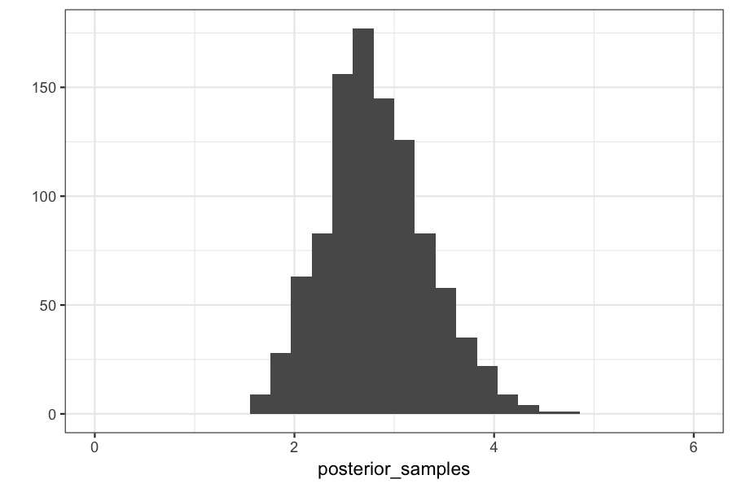

Monte Carlo methods: Approximate Bayesian Computation
Today: Approximate Bayesian Computation
Reading:Sisson, Fan, Beaumont, "Overview of Approximate Bayesian Computation"
Our goals
Next two weeks:
Bayesian Statistics
Suppose we have data \(y_1,\ldots, y_n\) that we believe can be described by a probability model with parameters \(\theta\).
We also have a prior distribution on the parameters \(\theta\), describing our belief about the values of those parameters before seeing any of the data.
\[
\begin{align*}
y_i \mid \theta &\sim P(y_i \mid \theta), \quad i = 1,\ldots, n\\
\theta & \sim \pi(\theta)
\end{align*}
\]
For example:
Data \(y_i\) are heights of men entering the military
We think that the \(y_i\) are distributed \(\mathcal N(\theta, \sigma^2)\)
We have some prior belief about \(\theta\), maybe that it is around 70".
We quantify our prior belief about \(\theta\) as \(\theta \sim \mathcal N(70, 5)\)
Once we have seen the actual heights, we can "update" our belief about \(\theta\) by computing the posterior distribution \(P(\theta \mid y_1,\ldots, y_n)\)
Or, as in population genetics, something more complicated:
Data are gene frequencies (e.g., what fraction of the population has a gene for blue eyes, what fraction of the population has a certain variant of the alcohol dehydrogenase enzyme, and so on)
Gene frequencies come from a complicated probabilistic model with parameters having to do with ancestral population sizes, recombination rates, migration
We have prior beliefs about parameters (the ancestral population sizes, recombination rates, etc)
In principle, if we write these explicitly as probability models, we can compute posterior distributions of the parameters given the data that we actually see.
By applying Bayes' rule, we can compute the posterior distribution of the parameters given the data: \[
\begin{align*}
P(\theta \mid y_1,\ldots, y_n) &= \frac{P(y_1,\ldots, y_n \mid \theta)\pi(\theta)}{P(y_1,\ldots, y_n)}
\end{align*}
\]
We want to know as much about this distribution as possible.
For simple cases it is available in closed form
For more complicated cases our best hope is to draw samples of it
From those samples we can compute posterior means, variances, etc. using the Monte Carlo methods from last class.
One way of drawing samples from the posterior
Inputs:
A target posterior: \(P(\theta \mid y_{\text{obs}}) \propto P(y_{\text{obs}} \mid \theta) \pi(\theta)\)
A way of simulating from \(P(y_{\text{obs}} \mid \theta)\)
A prior on the parameters \(\pi(\theta)\)
Sampling: for \(i = 1,\ldots, N\):
Generate \(\theta^{(i)} \sim \pi(\theta)\)
Generate \(y^{(i)} \sim p(y \mid \theta^{(i)})\)
If \(y^{(i)} = y_{\text{obs}}\), accept \(\theta^{(i)}\)
Why does this work?
Our draws \((\theta^{(i)}, y^{(i)})\) are samples from the joint distribution \(P(\theta, y)\)
Keeping only the values for which \(y^{(i)} = y_{\text{obs}}\) is the definition of conditioning on \(y_{\text{obs}}\).
ABC: Simple Example
Bayesian analysis for a Poisson random variable.
Model is: \[
\begin{align*}
Y_i &\sim \text{Poisson}(\theta), \quad i = 1,\ldots, n \\
\theta &\sim \text{Gamma}(\alpha, \beta)
\end{align*}
\]
By Bayes rule, we can find in closed form that the posterior, \(P(\theta \mid Y_1, \ldots, Y_n)\) has a \(\text{Gamma}(\sum_{i=1}^n Y_i + \alpha, n + \beta)\) distribution.
Let's pretend we can't do that though, and try using ABC.
Set up the function:
generate_abc_sample = function(observed_data,
prior_distribution,
data_generating_function) {
while(TRUE) {
theta = prior_distribution()
y = data_generating_function(theta)
if(all(y == observed_data)) {
return(theta)
}
}
}
Analysis for:
Prior distribution: \(\theta \sim \text{Gamma}(1, 1)\)
Likelihood: \(y \mid \theta \sim \text{Poisson}(\theta)\)
Observed data: \(y = 3\)
prior_distribution = function() rgamma(n = 1, shape = 1, rate = 1)
data_generating_function = function(theta) rpois(n = 1, lambda = theta)
observed_data = 3
generate_abc_sample(observed_data, prior_distribution, data_generating_function)
## [1] 3.463678
posterior_samples = replicate(n = 1000, generate_abc_sample(observed_data, prior_distribution, data_generating_function))
## our posterior should be gamma(y + alpha, 1 + beta) or gamma(4, 2)
## The mean of a gamma distribution is alpha / beta, so should be 2
mean(posterior_samples)
## [1] 2.037032
## The variance of a gamma distribution is alpha / beta^2, so should be 1
var(posterior_samples)
## [1] 1.10589
qplot(posterior_samples)
## `stat_bin()` using `bins = 30`. Pick better value with `binwidth`.

x_vec = seq(0, 6, length.out = 1000)
plot(dgamma(x_vec, shape = 4, rate = 2) ~ x_vec, type = 'l', ylab="true posterior density")

What if you have more than one sample?
We still have
Prior distribution: \(\theta \sim \text{Gamma}(1, 1)\)
Likelihood: \(y_i \mid \theta \sim \text{Poisson}(\theta)\)
Observed data: \(y_1 = 3, y_2 = 3\)
n_samples = 2
data_generating_function = function(theta) rpois(n = n_samples, lambda = theta)
observed_data = rep(3, n_samples)
generate_abc_sample(observed_data, prior_distribution, data_generating_function)
## [1] 1.445692
system.time(replicate(n = 1000, generate_abc_sample(observed_data, prior_distribution, data_generating_function)))
## user system elapsed
## 0.767 0.119 0.889
(Try changing n_samples to something bigger on your own computer...)
ABC: The algorithm
Inputs:
A target posterior: \(\pi(\theta \mid y_{\text{obs}}) \propto p(y_{\text{obs}} \mid \theta) \pi(\theta)\)
A way of simulating from \(p(y_{\text{obs}} \mid \theta)\)
A prior on the parameters \(\pi(\theta)\)
A summary statistic function \(s\)
A tolerance \(\epsilon\)
Sampling: for \(i = 1,\ldots, N\):
Generate \(\theta^{(i)} \sim g(\theta)\)
Generate \(y^{(i)} \sim p(y \mid \theta^{(i)})\)
If \(\|s(y^{(i)}) - s(y_{\text{obs}})\| < \epsilon\), accept \(\theta^{(i)}\)
This method generates approximate samples from the posterior distribution
Set up a function for the approximate version of ABC:
generate_abc_sample_2 = function(observed_data,
summary_statistic,
prior_distribution,
data_generating_function,
epsilon) {
while(TRUE) {
theta = prior_distribution()
y = data_generating_function(theta)
if(abs(summary_statistic(y) - summary_statistic(observed_data)) < epsilon) {
return(theta)
}
}
}
Let's see what happens with the approximate version:
We still have
Prior distribution: \(\theta \sim \text{Gamma}(1, 1)\)
Likelihood: \(y_i \mid \theta \sim \text{Poisson}(\theta)\)
Observed data: \(y_i = 3\), \(i = 1,\ldots, 10\)
Summary statistic \(s\) is the mean function, so \(s(y_1,\ldots, y_n) = \frac{1}{n} \sum_{i=1}^n y_i\)
Our tolerance is \(\epsilon = .1\)
n_samples = 10
prior_distribution = function() rgamma(n = 1, shape = 1, rate = 1)
data_generating_function = function(theta) rpois(n = n_samples, lambda = theta)
observed_data = rep(3, n_samples)
summary_statistic = mean
epsilon = .1
generate_abc_sample_2(observed_data, summary_statistic, prior_distribution, data_generating_function, epsilon)
## [1] 1.7603
posterior_samples = replicate(n = 1000,
generate_abc_sample_2(observed_data,
summary_statistic,
prior_distribution,
data_generating_function,
epsilon))
Checking on the posterior means and variances:
(true_posterior_mean = (1 + sum(observed_data)) / (n_samples + 1))
## [1] 2.818182
mean(posterior_samples)
## [1] 2.81916
(true_posterior_variance = (1 + sum(observed_data)) / (n_samples + 1)^2)
## [1] 0.2561983
var(posterior_samples)
## [1] 0.2605666
Checking on the posterior distributions:
qplot(posterior_samples) + xlim(c(0, max(x_vec)))
## `stat_bin()` using `bins = 30`. Pick better value with `binwidth`.

plot(dgamma(x_vec, shape = 1 + sum(observed_data), rate = n_samples + 1) ~ x_vec, type = 'l')
ABC: Some notes
Difficulties: choice of summary statistics:
Theory says they should be sufficient statistics for the model.
In practice, they are chosen by expert opinion to be features of the data that are thought to be informative about the underlying parameters.
Advantage: you need to know hardly anything about the likelihood, you just need to be able to simulate data from it.
Interpretation of Bayesian inference: parameters with higher posterior probability are simply those that make the observed data match data that we simulate under those parameters.
Next week we'll talk about more exact methods for sampling from posteriors, but they will require us to know more about the functions